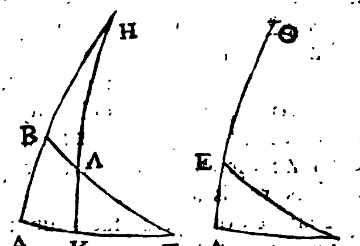

Prop. III. Theor. (Halley 1758, pp. 87–88)¶
Menelai Alexandrini Sphaericorum Lib. III Prop. III. Theor. (Halley 1758, pp. 87–88)
Enuntiatio (Halley 1758, p. 87)
Si duo triangula Sphaerica duos habeant angulos ad utramque basim rectos, duos vero alios angulos ad bases aequales quidem sed non rectos: erunt sinus duorum laterum, angulum rectum in triangulorum altero continentium, inter se in ratione composita ex ratione quam habent sinus laterum in altero triangulo angulum rectum continentium, & eodem modo sumptorum, & ex ratione quam habet sinus arcus inter Verticem trianguli prioris & polum basis ejus intercepti, ad sinum arcus inter Verticem alterius trianguli & basis ejus polum intercepti.
Sint duo triangula Sphaerica ΑΒΓ, ΔΕΖ, quorum duo anguli


Α, Δ sint recti, duo vero alii anguli ad Γ, Ζ aequales sint sed non recti, & sint puncta Η, Θ poli utriusque basis ΓΑ, ΖΔ: dico sinum arcus ΑΒ esse ad sinum arcus ΑΓ in ratione composita ex ratione sinus arcus ΕΔ ad sinum arcus ΔΖ & ratione sinus arcus ΗΒ ad sinum arcus ΕΘ.
Fiat enim arcus ΓΚ aequalis arcui ΔΖ, & per Η polum arcus ΑΓ ducatur arcus ΗΛΚ occurrens arcui ΓΒ in Λ; & erit arcus ΚΛ aequalis arcui ΔΕ, uti ΛΗ arcui ΕΘ. Quoniam vero figura ΑΗΛΓ est ad modum figurae Prop. I. hujus, erit sinus arcus ΑΒ ad sinum arcus ΒΗ in ratione composita ex ratione sinus arcus ΑΓ ad sinum arcus ΓΚ, & ratione sinus arcus ΚΛ ad sinum arcus ΛΗ: unde transpositis terminis, ratio sinus arcus ΑΒ ad sinum arcus ΑΓ composita erit ex ratione sinus arcus ΒΗ ad sinum arcus ΛΗ, & ratione sinus arcus ΚΛ ad sinum arcus ΓΚ. Sed arcus ΓΚ aequalis est arcui ΖΔ, & arcus ΚΛ arcui ΔΕ, sicut & arcus ΛΗ arcui ΘΕ: quapropter ratio sinus arcus ΑΒ ad sinum arcus ΑΓ componitur ex ratione sinus arcus ΔΕ ad sinum arcus ΖΔ & ex ratione sinus arcus ΒΗ ad sinum arcus ΘΕ. Q. E. D.
Coroll. Hinc constat Tangentes perpendicularium ΑΒ, ΔΕ sinubus Basium ΑΓ, ΔΖ proportionales esse.